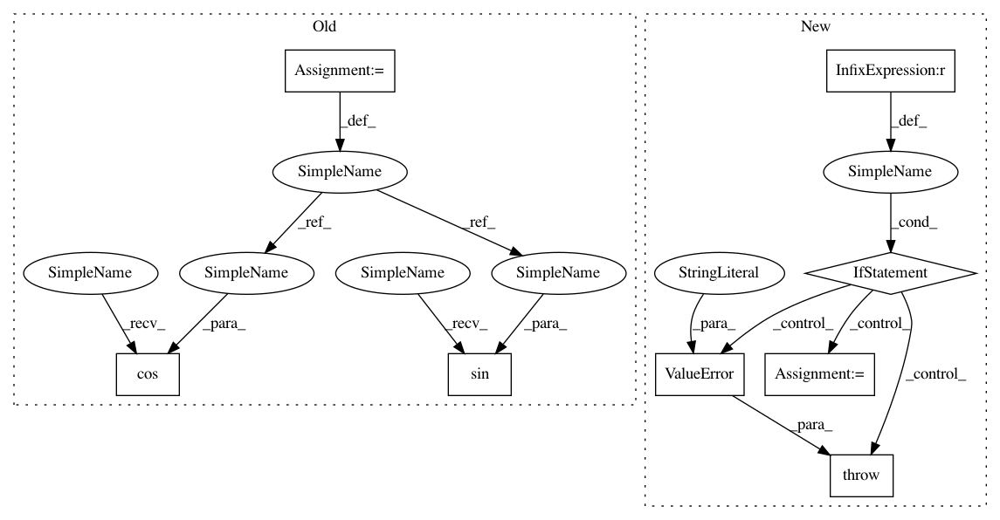

b5c8bdd81be77eac5434a476f62c5bdef56f1838,texar/modules/embedders/position_embedders.py,SinusoidsPositionEmbedder,__init__,#SinusoidsPositionEmbedder#Any#Any#,251
Before Change
(tf.to_float(num_timescales) - 1))
inv_timescales = min_timescale * tf.exp(
tf.to_float(tf.range(num_timescales)) * -log_timescale_increment)
scaled_time = tf.expand_dims(positions, 1) \
* tf.expand_dims(inv_timescales, 0)
signal = tf.concat([tf.sin(scaled_time), tf.cos(scaled_time)], axis=1)
signal = tf.pad(signal, [[0, 0], [0, tf.mod(dim, 2)]])
self.signal = signal
After Change
self.inv_timescales = inv_timescales
if self._cache_embeddings:
if position_size is None:
raise ValueError(
""position_size" must not be None when "
""cache_embeddings" is set to True"
)
positions = tf.to_float(tf.range(position_size, dtype=tf.int32))
signal = self._compute_embeddings(positions)
self.signal = signal
@staticmethod
def default_hparams():
In pattern: SUPERPATTERN
Frequency: 3
Non-data size: 8
Instances
Project Name: asyml/texar
Commit Name: b5c8bdd81be77eac5434a476f62c5bdef56f1838
Time: 2019-07-01
Author: haoranshi97@gmail.com
File Name: texar/modules/embedders/position_embedders.py
Class Name: SinusoidsPositionEmbedder
Method Name: __init__
Project Name: scikit-image/scikit-image
Commit Name: f966ef79ae7c47b93029e065b3ee6686bab5bff7
Time: 2017-03-29
Author: jirka.borovec@seznam.cz
File Name: skimage/measure/fit.py
Class Name: LineModel
Method Name: predict_x
Project Name: scikit-image/scikit-image
Commit Name: f966ef79ae7c47b93029e065b3ee6686bab5bff7
Time: 2017-03-29
Author: jirka.borovec@seznam.cz
File Name: skimage/measure/fit.py
Class Name: LineModel
Method Name: predict_y